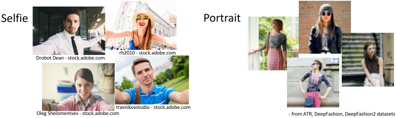
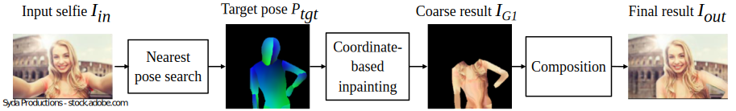

Due to the ubiquity of smartphones, it is popular to take photos of one's self, or "selfies." Such photos are convenient to take, because they do not require specialized equipment or a third-party photographer. However, in selfies, constraints such as human arm length often make the body pose look unnatural. To address this issue, we introduce unselfie, a novel photographic transformation that automatically translates a selfie into a neutral-pose portrait. To achieve this, we first collect an unpaired dataset, and introduce a way to synthesize paired training data for self-supervised learning. Then, to unselfie a photo, we propose a new three-stage pipeline, where we first find a target neutral pose, inpaint the body texture, and finally refine and composite the person on the background. To obtain a suitable target neutral pose, we propose a novel nearest pose search module that makes the reposing task easier and enables the generation of multiple neutral-pose results among which users can choose the best one they like. Qualitative and quantitative evaluations show the superiority of our pipeline over alternatives.
We collect an unpaired selfie-portrait dataset. There are 4614 selfie photos collected from the Internet, and 23169 neutral-pose portraits collected from three public datasets. We then synthesize paired data for self-supervised learning.

Framework
Our pipeline contains three stages. First, Based on the input selfie Iin, we extract its pose information using DensePose. We perform nearest neighbour search on the pose representation to find the target neutral pose Ptgt that has the most similar pose configuration in the upper torso region. Second, using DensePose, we map the pixels in the input selfie to the visible regions of the target pose and then use coordinate-based inpainting [1] to synthesize a coarse human body. Finally, we then use a composition step to refine the coarse result by adding more details and composite it into the original background.

Results
Since we defined a brand new unselfie application, there is no prior work to compare to that addresses the exact same problem. Nevertheless, we introduce some modifications to three human synthesis methods, DPIG [2], VUNET [3], and PATN [4]. Note that these methods synthesize pixels based on a pre-specified target pose. To make their approaches work, we need to perform our proposed nearest pose search module to calculate Ptgt and then use their approaches to synthesize the final pixels. Furthermore, we also can synthesize multi-modal results for users to choose from.
Comparisons
Top-5 results
References:
[1] Grigorev, A., et al. Coordinate-based texture inpainting for pose-guided image generation. In CVPR, 2019.
[2] Ma, L., et al. Disentangled person image generation. In CVPR, 2018.
[3] Esser, P., et al. A variational u-net for conditional appearance and shape generation. In CVPR, 2018.
[4] Zhu, Z., et al. Progressive pose attention transfer for person image generation. In CVPR, 2019.